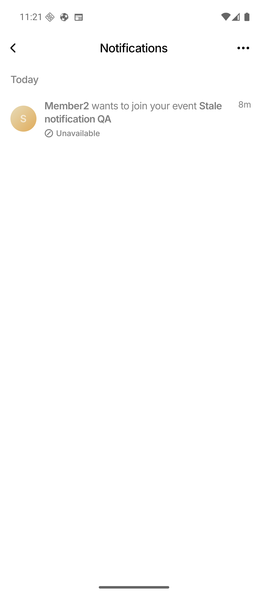
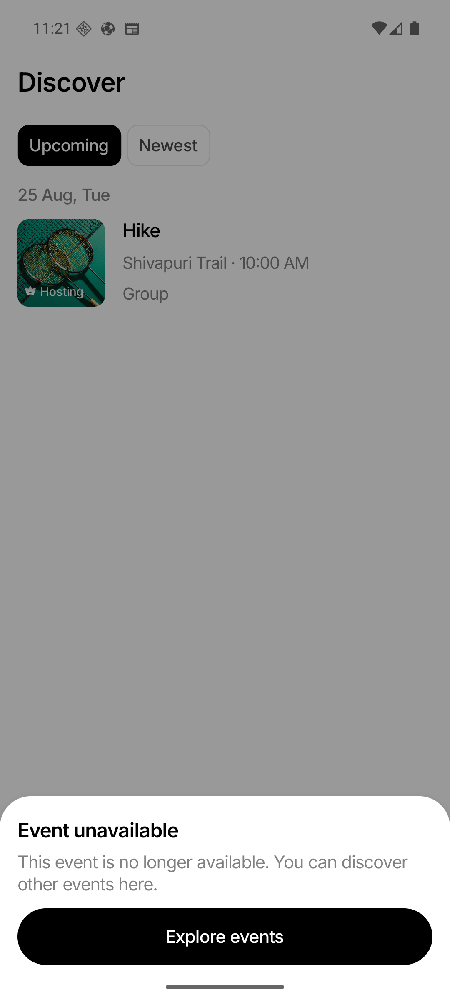

Domain contract and schema
Added idempotent action columns/backfill, stable join-request identity, matching indexes, server/client types, and active/resolved/unavailable semantics.
All six phases of the plan are implemented. Historical notification copy is preserved, action validity follows live event/request/conversation state, and every inbox or OS-push tap crosses one authenticated server boundary before navigation.
Uses persisted notification IDs, or validated legacy hints when no row ID exists.
POST /api/notifications/actions/resolve
Checks ownership, grouping, request state, event topology, and membership.
Marks handled rows read and persists newly found resolved/unavailable state.
Routes only from the server result; failures remain safely in Notifications.
Added idempotent action columns/backfill, stable join-request identity, matching indexes, server/client types, and active/resolved/unavailable semantics.
Added the authenticated single/group resolver, strict ownership/group validation, safe legacy hints, and richer request/chat payload identity.
Centralized opening, added per-row progress/retry behavior, muted history summaries, explicit status labels, and the one-shot Discover result prompt.
Wired approve, deny, cancel, report cancellation, event delete, leave/remove, account delete, and group topology changes to eager action updates.
Push payloads now carry recipient-specific notification IDs when persistence works; no-ID pushes permanently retain the safe validated-hint path.
Added migration/lifecycle/routing/UX coverage, content-free resolver logging, public API regression checks, and sequential Group plus 1:1 Android verification.
| Condition | Persisted action | Safe destination |
|---|---|---|
| Active chat + current membership | Active; handled row becomes read | Exact chat |
| Pending host request, Group | Active | Join Requests |
| Pending host request, 1:1 | Active | Event Details |
| Resolved/cancelled request; event exists | Resolved + read | Event Details |
| Deleted event | Unavailable + read | Discover + event prompt |
| Lost access / missing conversation | Unavailable + read | Discover + generic prompt |
| Approved request after topology replacement | Active only after membership proof | Validated replacement chat |
| Unknown type | Safe historical row | Stay in Notifications |
| Temporary resolver failure | Unchanged | Stay and retry |
| Gate | Result | Evidence |
|---|---|---|
| Backend tests | Pass | cd server && go test ./...; both packages green. |
| Focused frontend tests | Pass | 6 suites, 70 tests; resolver API, mapper, routing, inbox, collapse, and Home prompt. |
| TypeScript | Pass | npm run typecheck. |
| Touched-file lint | Pass | Zero errors and zero warnings after import/token/type cleanup. |
| Formatting / whitespace | Pass | Prettier check and git diff --check. |
| Public API deleted-event regression | Pass |
Group and 1:1: active unread request → event delete → unavailable/read with
event_deleted; unread count 0.
|
| Android emulator | Pass | Group and 1:1 muted row, no badge, safe Discover redirect, exact prompt, and one-shot dismissal verified on Android 16 / WEIF_API_36. |
| Entire frontend repository | Baseline failures | 73/78 suites and 1,205/1,232 tests passed; all notification-related suites passed. |
EventDetailsScreen.rendering, ChatThreadScreen.rendering,
MyEventsScreen.rendering, eventListSections, and
createEventForm. Failures are existing mock/loading, copy/punctuation, and
date-normalization expectation drift; the 70 focused notification tests are green.


notification action resolved log by reason to watch
unavailable rates and find missed invalidation paths.